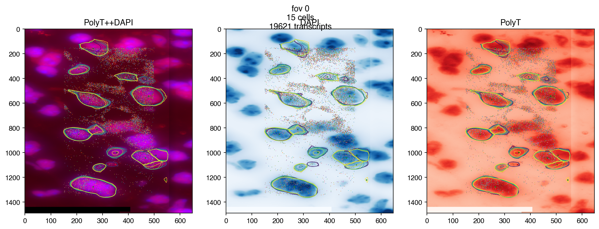
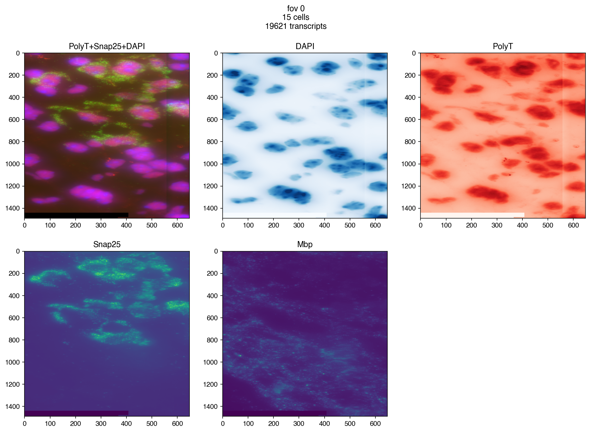

MERFISH Experiment Region Entry Point
Contents
3. MERFISH Experiment Region Entry Point#
3.1. Goals#
Provide a single entry point for a MERFISH experiment region
Simple API for retriving file and experimental information
Plot MERFISH transcripts together with DAPI, PolyT and other smFISH images
3.2. Main Entry Point#
from merfishing import Merfish
merfish = Merfish('dummy_experiment/output/region_0/')
MERFISH Experiment Region
Region data located at /gale/netapp/cemba3c/merfish/example/dummy_experiment/output/region_0
Experiment dir located at /gale/netapp/cemba3c/merfish/example/dummy_experiment
/gale/netapp/cemba3c/merfish/example/dummy_experiment/output/region_0 does not contain cellpose results or the results are incomplete, using watershed results from vizgen pipeline instead.
3.3. Get Info#
# field of view id
fov = 0
# padding in pixel to add to the image boarder
padding = 150
# get FOV cell meta
cell_meta = merfish.get_cell_metadata(fov=fov)
# get FOV cell boundaries
boundaries = merfish.get_cell_boundaries(fov=fov)
# get FOV transcripts
transcripts = merfish.get_transcripts(fov)
cell_meta
| fov | volume | center_x | center_y | min_x | max_x | min_y | max_y | |
|---|---|---|---|---|---|---|---|---|
| 124059131287748509520752689217573234598 | 0 | 733.659806 | 280.461963 | 2399.439158 | 274.197963 | 286.725963 | 2391.339158 | 2407.539159 |
| 124436133021557870166867524905466212748 | 0 | 304.041130 | 306.381964 | 2501.283161 | 301.413964 | 311.349964 | 2497.395161 | 2505.171161 |
| 138776182618754649880225222913501206037 | 0 | 311.577532 | 302.223964 | 2495.019161 | 296.445964 | 308.001964 | 2488.539161 | 2501.499161 |
| 145005692207541910116913385133261169729 | 0 | 1119.306658 | 278.895963 | 2444.043160 | 269.877963 | 287.913964 | 2435.727159 | 2452.359160 |
| 169795232385260290859218448407072971352 | 0 | 521.284599 | 306.597964 | 2492.751161 | 301.413964 | 311.781964 | 2486.703161 | 2498.799161 |
| 178143416887932403186631175718891022064 | 0 | 267.566342 | 294.231964 | 2424.333159 | 289.317964 | 299.145964 | 2420.607159 | 2428.059159 |
| 222239292118322505683048722379758116735 | 0 | 372.463615 | 281.865963 | 2470.449160 | 277.329963 | 286.401963 | 2465.859160 | 2475.039160 |
| 228416963106068770964479979131547418808 | 0 | 1578.965968 | 303.573964 | 2440.911159 | 295.905964 | 311.241964 | 2432.055159 | 2449.767160 |
| 267309588870324834273540950593508282409 | 0 | 464.580060 | 274.521963 | 2417.853159 | 269.985963 | 279.057963 | 2413.263159 | 2422.443159 |
| 295182315189729408205630822858763076751 | 0 | 2.449440 | 310.647964 | 2514.405161 | 310.053964 | 311.241964 | 2512.191161 | 2516.619161 |
| 324898700350739488878179092763503871302 | 0 | 428.687014 | 290.235964 | 2490.159161 | 285.969963 | 294.501964 | 2484.651161 | 2495.667161 |
| 325594716403436894083424151289809835051 | 0 | 2015.399337 | 280.461963 | 2520.237162 | 270.633963 | 290.289964 | 2510.679161 | 2529.795162 |
| 32749162482497951254088627751199223791 | 0 | 179.823897 | 285.483963 | 2503.011161 | 280.245963 | 290.721964 | 2498.583161 | 2507.439161 |
| 33683436332347708689024264839442433156 | 0 | 823.204339 | 274.143963 | 2474.391160 | 268.041963 | 280.245963 | 2468.451160 | 2480.331160 |
| 79357720784388128471537864170375678149 | 0 | 79.108168 | 302.817964 | 2426.763159 | 299.253964 | 306.381964 | 2423.847159 | 2429.679159 |
boundaries
{'124059131287748509520752689217573234598': <merfishing.core.boundary.CellBoundary at 0x7f98ce080490>,
'124436133021557870166867524905466212748': <merfishing.core.boundary.CellBoundary at 0x7f98ce067370>,
'138776182618754649880225222913501206037': <merfishing.core.boundary.CellBoundary at 0x7f98ce067f70>,
'145005692207541910116913385133261169729': <merfishing.core.boundary.CellBoundary at 0x7f98ce0804c0>,
'169795232385260290859218448407072971352': <merfishing.core.boundary.CellBoundary at 0x7f98cdc6f4f0>,
'178143416887932403186631175718891022064': <merfishing.core.boundary.CellBoundary at 0x7f98cdc6f820>,
'222239292118322505683048722379758116735': <merfishing.core.boundary.CellBoundary at 0x7f98cdc6f850>,
'228416963106068770964479979131547418808': <merfishing.core.boundary.CellBoundary at 0x7f98cdc6fa00>,
'267309588870324834273540950593508282409': <merfishing.core.boundary.CellBoundary at 0x7f98cdc6fac0>,
'295182315189729408205630822858763076751': <merfishing.core.boundary.CellBoundary at 0x7f98cdc6fb80>,
'324898700350739488878179092763503871302': <merfishing.core.boundary.CellBoundary at 0x7f98cdc6f490>,
'325594716403436894083424151289809835051': <merfishing.core.boundary.CellBoundary at 0x7f98cdc6fd00>,
'32749162482497951254088627751199223791': <merfishing.core.boundary.CellBoundary at 0x7f98cdc6fdc0>,
'33683436332347708689024264839442433156': <merfishing.core.boundary.CellBoundary at 0x7f98cdc6fe80>,
'79357720784388128471537864170375678149': <merfishing.core.boundary.CellBoundary at 0x7f98cdc6ff40>}
transcripts
| barcode_id | global_x | global_y | global_z | x | y | fov | gene | transcript_id | |
|---|---|---|---|---|---|---|---|---|---|
| 664215 | 175 | 302.003265 | 2422.750000 | 4 | 1923.456421 | 978.842041 | 0 | Prkca | ENSMUST00000059595 |
| 337701 | 88 | 296.153534 | 2438.967041 | 1 | 1869.292480 | 1129.000000 | 0 | Stac | ENSMUST00000035083 |
| 337697 | 88 | 272.145966 | 2437.195801 | 1 | 1647.000000 | 1112.598877 | 0 | Stac | ENSMUST00000035083 |
| 337694 | 88 | 290.370422 | 2435.158447 | 1 | 1815.744995 | 1093.733643 | 0 | Stac | ENSMUST00000035083 |
| 337693 | 88 | 301.869324 | 2434.778564 | 1 | 1922.216187 | 1090.216187 | 0 | Stac | ENSMUST00000035083 |
| ... | ... | ... | ... | ... | ... | ... | ... | ... | ... |
| 1263210 | 344 | 288.718689 | 2407.999512 | 3 | 1800.451050 | 842.262634 | 0 | Opcml | ENSMUST00000115243 |
| 1064086 | 293 | 302.692963 | 2479.227295 | 3 | 1929.842529 | 1501.778198 | 0 | Nfia | ENSMUST00000107057 |
| 8179 | 2 | 302.535217 | 2481.986328 | 2 | 1928.382080 | 1527.325928 | 0 | Kat2b | ENSMUST00000000724 |
| 1008680 | 278 | 285.378601 | 2517.526367 | 2 | 1769.524414 | 1856.399658 | 0 | Ptprd | ENSMUST00000102834 |
| 177459 | 45 | 284.430573 | 2456.967285 | 5 | 1760.746460 | 1295.667725 | 0 | Rps6ka2 | ENSMUST00000024575 |
19621 rows × 9 columns
3.4. Transform Coordinates#
3.4.1. Four kinds of coordinates and their transformation#
Global Pixel
Global Micron
Local Pixel
Local Micron
3.4.2. Transform Helper#
get FOV extent:
xmin, ymin, xmax, ymax = merfish.get_fov_pixel_extent_from_transcripts(fov, padding)get FOV offset:
offset = (xmin, ymin)Global to Local: add FOV offset (xmin, ymin)
Local to Global: minus FOV offset (xmin, ymin)
Micron to Pixel:
merfish.transform.micron_to_pixel_transformPixel to Micron:
merfish.transform.pixel_to_micron_transform
# coords in file are global microns
cell_meta[['center_x', 'center_y']].head()
| center_x | center_y | |
|---|---|---|
| 124059131287748509520752689217573234598 | 280.461963 | 2399.439158 |
| 124436133021557870166867524905466212748 | 306.381964 | 2501.283161 |
| 138776182618754649880225222913501206037 | 302.223964 | 2495.019161 |
| 145005692207541910116913385133261169729 | 278.895963 | 2444.043160 |
| 169795232385260290859218448407072971352 | 306.597964 | 2492.751161 |
merfish.transform.micron_to_pixel_transform([[280, 2399], [306, 2501]])
array([[ 1720, 24564],
[ 1960, 25508]])
merfish.transform.pixel_to_micron_transform([[1720, 24564], [1960, 25508]])
array([[ 280.0272, 2399.0312],
[ 305.9468, 2500.9817]], dtype=float32)
# xmin, ymin, xmax, ymax
merfish.get_fov_micron_extent_from_transcripts(fov)
(268.18927001953125, 2398.84130859375, 305.7469177246094, 2527.31201171875)
# xmin, ymin, xmax, ymax
merfish.get_fov_pixel_extent_from_transcripts(fov, padding)
(1460, 24412, 2108, 25902)
3.5. Make Plots#
fig = merfish.plot_fov(fov, dpi=150)
3.6. More control on images#
3.6.1. Plot transcripts#
genes = transcripts['gene'].value_counts().index[:50]
fig = merfish.plot_fov(fov=fov, genes=genes, dpi=150)

3.6.2. plot other smFISH Images#
fig = merfish.plot_fov(
fov=fov,
plot_boundary=False,
plot_cell_centers=False,
genes=None,
image_names=('PolyT+Snap25+DAPI', 'DAPI', 'PolyT', 'Snap25', 'Mbp'),
padding=padding,
dpi=150
)
